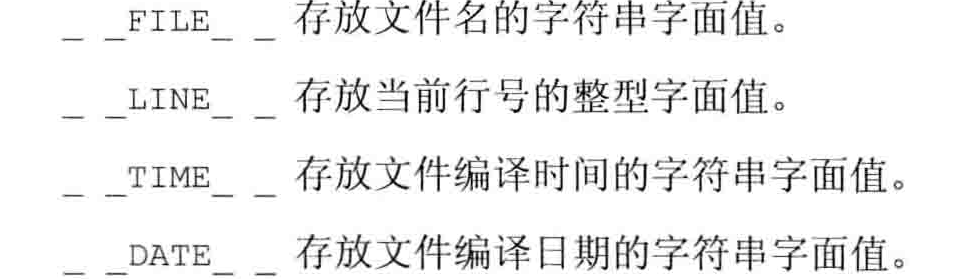

表达式
sizeof返回的是表达式结果类型的大小，而不是实际对象值的内存的大小
强制类型转换
- static_cast:任何具有明确定义的类型转换，主要不包含底层const，都可以使用static_cast.
- const_cast:只能改变运算对象的底层const，将const对象转换为非const对象，没办法做类型转换
- reinterpret_cast:为运算对象的位模式提供较低层次上的重新解析，不改变内容，只改变了表达的方式
|
|
函数
局部静态成员
局部静态成员：在程序执行路径第一次经过此对象定义语句的时候初始化，直到程序终止才被销毁，在此期间即使对象所在的函数结束执行也不会对其有影响
定义函数的源文件应该把含有函数声明的头文件包含进来，编译器负责验证函数的定义和声明是否匹配
initializer_list:可变参数列表
|
|
返回值：
- 不要返回局部对象的引用和指针。因为如果返回局部对象的引用时，由于函数运行结束之后局部对象会被析构，导致返回值为未知对象。
- 引用返回左值，返回值可以作为左值，如果返回的是引用的话
重载函数：
C++重载的是不区分顶层，区分底层
C++中名字查找发生在类型检查之前
内联函数：内联函数只是向编译器发出的一个请求，编译器可以忽略这个请求。通常就是在每个调用点内联展开。
constexpr函数：函数的返回值以及所有形参的类型都是字面值类型，而且函数体内必须有且只有一条return语句。constexpr为内联函数，不一定返回常量表达式。
调试帮助
assert预处理宏：是预处理器，而不是编译器检查的。用来检查不可能的情况
NDEBUG预处理变量：assert的行为依赖于这个预处理变量的状态，如果定义了这个预处理变量，就什么都不做。

函数指针
|
|